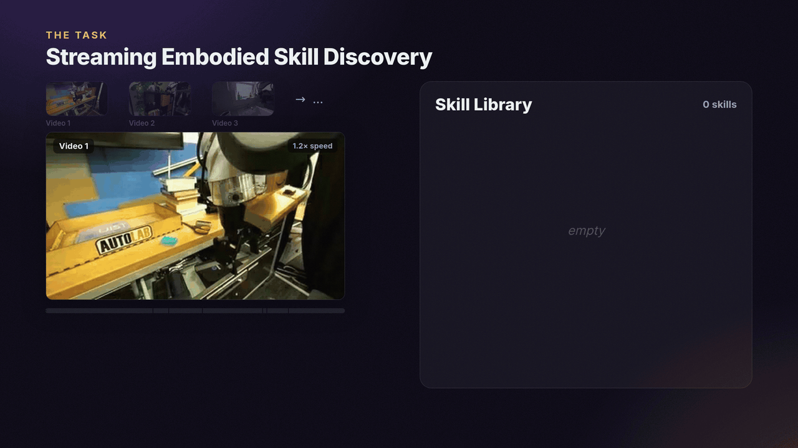

The task: a model watches videos one after another. Each time something is manipulated, it has to find when it happens, write it down as a skill like grasp(object, from), and decide: is this a skill it already has, or a new one?
Its skill library carries over from video to… video, so early choices shape later ones.
Our benchmark covers robot tabletop (DROID/RH20T) and kitchen (HD-EPIC) video: 12,429 verified skill calls over 48 kinds of actions.

GIFAlt text
Animated demo: three robot videos stream in; each event is tagged NEW or REUSE and flows into a persistent skill library that grows from grasp, transfer, place to pour.
![Animated explainer of three fine-tuning strategies, each with its own strength. A, Oracle-history SFT: practice on the correct library; keeps different actions apart. B, Counterfactual Library-state Rebalancing (CLaRe): same video, edited library, so removing a needed skill forces a new one and adding a look-alike changes nothing; finds the most actions. C, On-policy correction: practice on the model's own library, mistakes included; keeps repeats together. A grid counts settings where each is best: coverage 0/3/1 of 4; pair precision 5/2/1; pair recall 1/2/5; ARI 4/2/2; create recall 6/3/2; reuse recall 0/2/7 of 8. No single strategy wins everywhere.](m/5_finding2.gif)